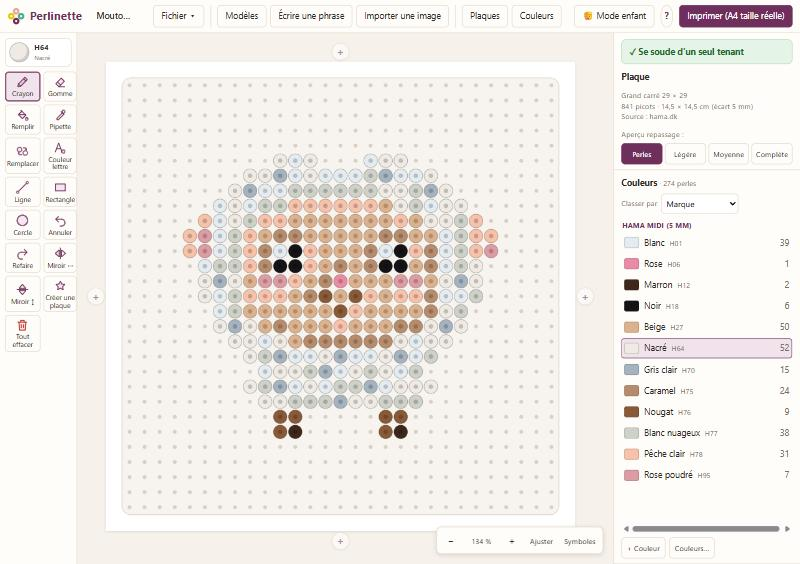
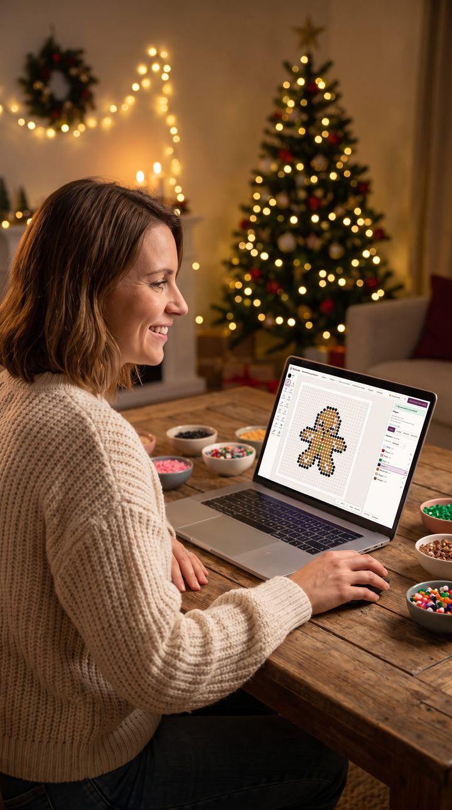
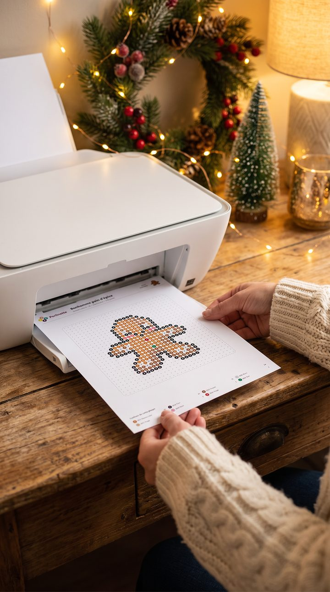
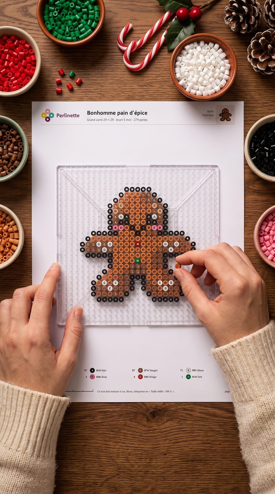
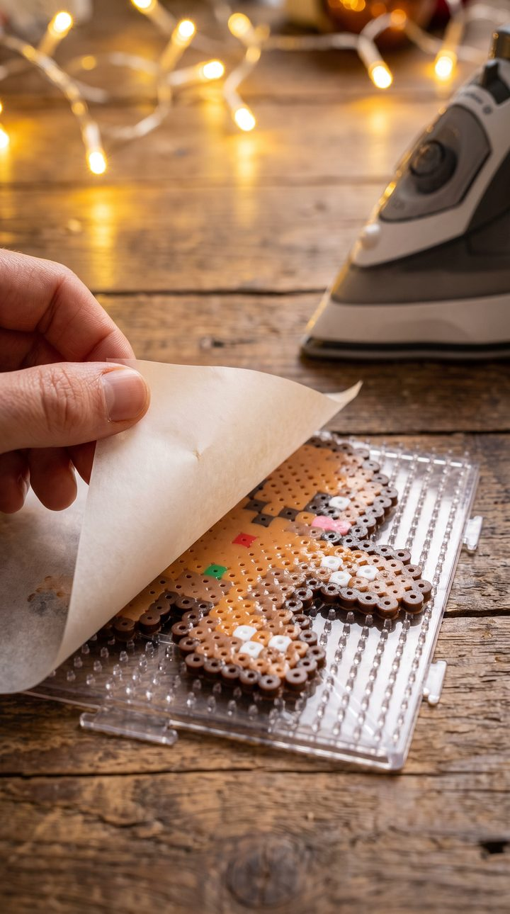
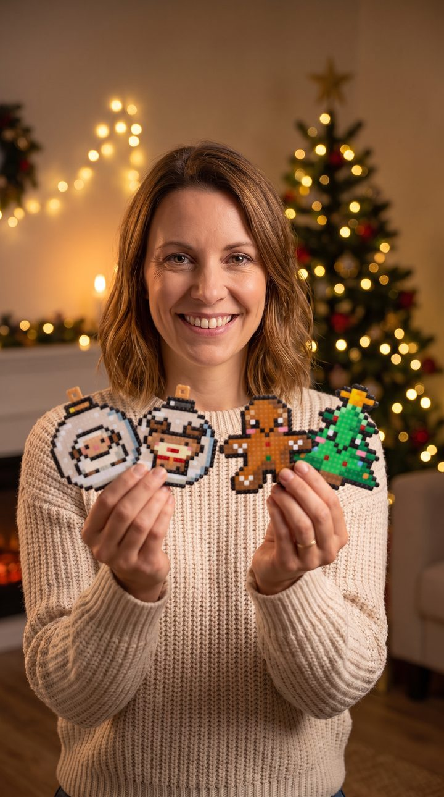
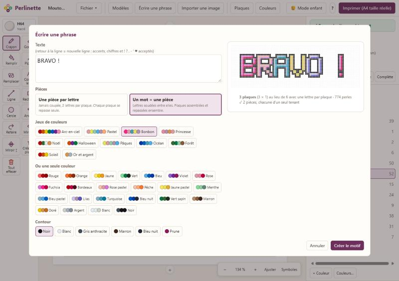
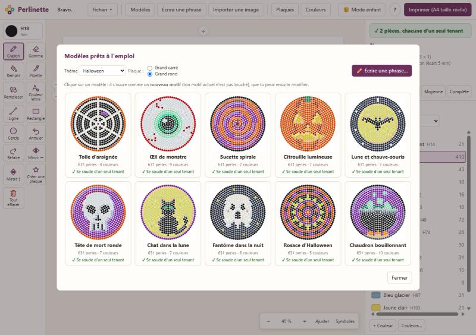
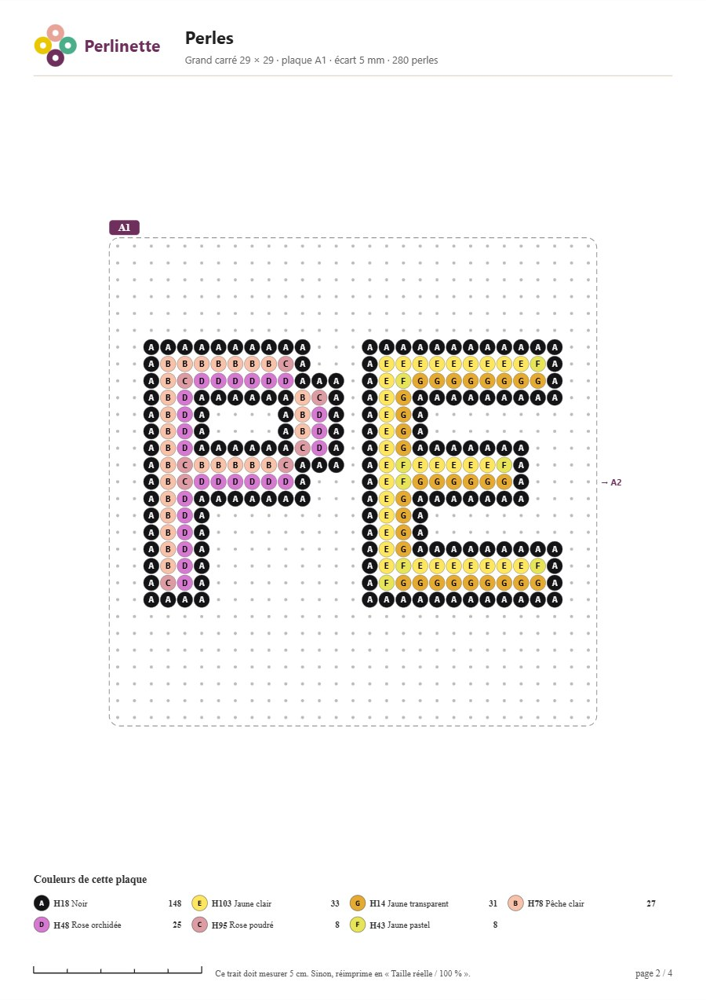

Beautiful fuse bead patterns that hold together.
Draw, pick your real Hama, Perler or Artkal colors, check that everything will fuse, then print your pegboard at actual size and lay a clear pegboard right on top.
Free and open source · no account · right in the browser of your phone, tablet or computer; download it only if you want to use it offline

Everything for fuse beads
Designed by a crafter, for making things on your own or with kids.
Real pegboards
Squares, hexagons, round boards in rings, Mini, Midi and Maxi — and your own pegboards (heart, star…).
Shapes that follow the beads
Line, rectangle, circle, filled or outlined, placed bead by bead on the pegs.
Will it hold?
Perlinette spots the beads that won't fuse: isolated, or only touching by a corner.
Ironing preview
Light, medium or full melt: see the result before you get the iron out.
Your colors
Full Hama, Perler and Artkal palettes, plus “My beads”: only what you have at home, with your stock.
An image → a design
Import a drawing or a photo: it becomes a design in your own colors.
Join pegboards
Add a pegboard on the left, right, top or bottom: your drawing stays in place.
Kids mode
Four big tools, large color dots, nothing that can get messed up.
With my beads
A pattern adapts to the colors you have at home: you see every match and can change it.
Several designs at once
Each design opens in its own tab and saves itself: nothing ever gets overwritten.
Ironed render
The ironed piece, shiny, with no background or pegboard: a PNG image ready to share.
Place my beads
The screen guides you while you place them: color by color or row by row, pegboard by pegboard.
No printer?
On a tablet, the design is shown at actual size: lay your clear pegboard right on the screen.
Like an app
Add Perlinette to your phone's home screen: it even works offline.
Phone and tablet
Online, the pegboard fills the screen: two fingers to zoom and move, one finger to place beads.
Always up to date
The version number is shown, and Perlinette tells you when a new version is out.
From screen to Christmas tree
Draw your pattern, print it, lay your clear pegboard on top, iron: done.





Illustrations created with artificial intelligence, from the real Perlinette patterns and the real A4 sheet.
Write a name in no time
Type a word or a sentence: Perlinette builds it in bold, shaded letters, accents included, and fits it on the fewest pegboards possible.
- one piece per letter, or a whole word in a single piece;
- ready-made color sets: rainbow, pastel, candy, Christmas, ocean…;
- a live preview while you type.

Patterns ready to iron
Over 700 free patterns drawn bead by bead, each one made for its pegboard: very simple for the little ones' Maxi, more detailed for the large square, finely detailed for Mini. Animals, Christmas, Halloween, fruit and vegetables, treats, fashion, beach, camping, landmarks, music, school, sports, kawaii, mandalas… All checked: they fuse in one piece.

Print at actual size
Lay your clear pegboard right on the sheet. The preview shows every page before printing:
- a color key on every sheet;
- a small picture of the ironed design at the top of each sheet, to see the result at a glance;
- several small pegboards on the same sheet when they fit;
- A1, A2… markers and arrows to the neighboring pegboards, to join them.
Prints on A4 paper — choose “actual size” (100 %) in the print dialog.

Supported pegboards
The number of pegs is checked for every pegboard.
Midi (5 mm)
Large square 29 × 29 (841), small square 14 × 14 (196), hexagons with 16, 13 and 8 pegs per side, round boards with 14, 11 and 7 rings.
Mini (2.5 mm)
Large square 57 × 57 (3,249 pegs).
Maxi (10 mm)
Large square 16 × 16 (256 pegs).
And yours
Free grids (square or staggered) and hand-drawn pegboards.
Get started
Nothing to install, no account: Perlinette opens in your browser.
On a computer, you can also install it, to use it offline:
- Download Perlinette (.zip file) and unzip the folder wherever you like.
- Windows: double-click
Perlinette.bat.
Mac / Linux: openindex.htmlin your browser. - Create: pick a pattern, write a name or draw bead by bead.
Try it online Download Perlinette
Perlinette is free and will stay free. If you find it useful, you can ☕ buy me a coffee: it encourages me to keep going.